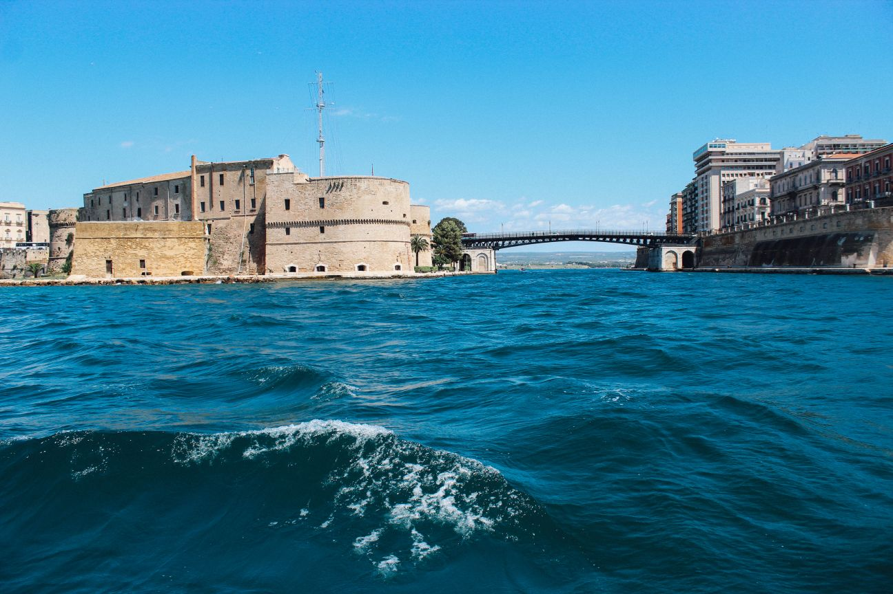
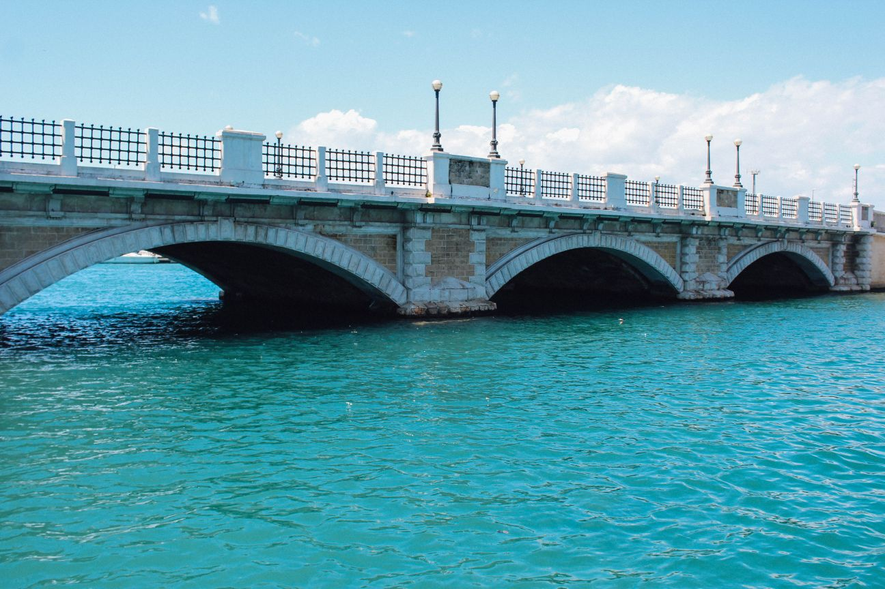

Was zu besuchen während der Übernachtung?
Marina di Pulsano


Der Bereich der Pulsano Marina durch eine Aufeinanderfolge von Felsen und Sandbuchten gekennzeichnet ist, sind die wichtigsten sind Luogovivo, Le fontane, Le canne, Montedarena, Ospedale Capparone (oder Villa Verde), Pezzarossa, Serrone, Lido Silvana ( in dessen Golf vorhanden ist, ein felsiges Inselchen, auch schwimmend zu erreichen, und an dessen Strand ist noch vorhanden, wenn auch in geringerer Zahl als in der Vergangenheit, von Wacholdern Exemplaren, die ihre Wurzeln zwischen dem Sand stellen), Terrarossa und Lido Checca (gelegen teilweise in der erwähnten Exklave der Gemeinde Taranto)Die Marina Bereich von Pulsano und das Hinterland genießen besonderen Ruhm unter den Touristen, die Salento aufgrund des natürlichen Reichtums, historischer und Essen und Wein zu besuchen, die Sie hier ausprobieren können. Sein Meer ist in der Regel gering, und da auf einen Familientourismus, ist der ideale Ort zum Schnorcheln und Tauchen zu üben. Die Strände sind aus Bade- und Touristensicht ausgestattet.
Taranto
-
 Castello Aragonese
Castello Aragonese -

Ponte Girevole
-

Ponte di Pietra
-
 Monumento al marinaio
Monumento al marinaio -
 Palazzo Prefettura
Palazzo Prefettura
Es wird von dem Großen Meer und dem kleinen See mit einer strategisch günstigen Lage „der Stadt der zwei Meere“, Taranto, gewaschen genannt, die es den Protagonisten von wichtigen historischen Ereignissen gemacht hat. Die alten kostbarste Zeugnisse werden am nationalen archäologischen Museum, MarTa, gehalten, wo Sie die berühmten „Gold of Taranto“ bewundern können, Bildende Kunst lokale Goldschmiedin Produktionen zwischen dem vierten und zweiten Jahrhundert vor Christus sowie die immense Sammlung von archäologische Funde aus der gesamten ionischen Provinz Die Geschichte von Taranto verläuft entlang der zwei Brücken, die die alte Stadt mit der modernen verbinden. Neben der Brücke aus Stein nach der Flut von 1883 erbaut, öffnete ich die Drehbrücke im Jahr 1887 immer noch den Charme der großen Werke des Maschinenbaus und die Führung in dem Labyrinth der engen Gassen hat rund um die zentrale Via Cava, entlang denen mehrere Workshops blühen. In diesem Isthmus Aufstieg und edle Architektur verschiedener Epochen und Stilen Kirchen wie die Kathedrale von San Cataldo in der Romanik und Barock, oder das von San Domenico mit gotischen Elementen.
Valle d'Itria
-
 Alberobello
Alberobello -
 Martina Franca
Martina Franca -
 Ceglie Messapica
Ceglie Messapica -
 Cisternino
Cisternino -
 Ostuni
Ostuni
Trulli, umgeben von Weinbergen und Olivenhainen, so weit das Auge reicht, ist das authentischste Gesicht des Valle d'Itria. Die Landschaft erfüllt den Blick einer zeitlosen Magie, im Herzen der charmanten Dörfer wie Alberobello, Martina Franca, Ceglie Messapica und Cisternino.Ostuni sieht aus wie eine Fata Morgana, schön auf dem Hügel in der mit Olivenbäumen bedeckten Hochebene, wo das Grün ins Blaue stürzt von der Ardrialsee. Spazieren Sie durch die Gassen und bewundern Sie die schönen Höfe und Plätze, die von weißen Häusern, Kunsthandwerksläden und Restaurants eingerahmt werden, in denen Sie köstliche Fleischbraten und schmackhaftes Gemüse der Saison zubereiten .